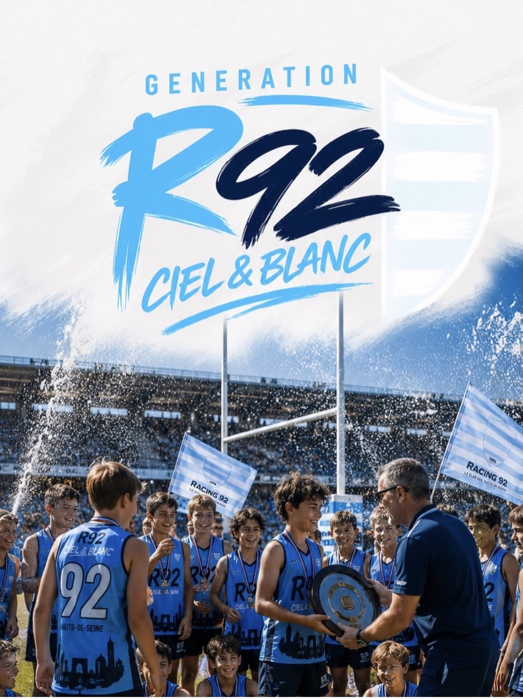

Respect
Esprit d'équipe avant tout, fair-play et bienveillance, respect des adversaires, écoute mutuelle.
L'association
Génération R92 est une association loi 1901 créée par les familles de l'École de Rugby du Racing 92. Elle rassemble parents, joueurs et partenaires autour d'un projet commun : promouvoir les valeurs du rugby et du Racing 92, fédérer une communauté soudée et offrir aux jeunes une expérience sportive et humaine inoubliable.
Promouvoir les valeurs fondamentales du rugby — respect, solidarité et dépassement de soi — en cohérence avec l'identité du Racing 92. Nous créons du lien entre les familles, les joueurs et l'association à travers des événements fédérateurs qui font rayonner les couleurs Ciel & Blanc dans tout le département des Hauts-de-Seine. Et chaque saison, nous finançons le voyage de fin d'année des U14.
L'association accompagne toutes les catégories de l'École de Rugby, des U6 aux U18, sur les deux pôles : Colombes et Le Plessis-Robinson. Des centaines de jeunes qui partagent les mêmes valeurs, les mêmes couleurs et la même passion du ballon ovale. Génération R92, c'est leur famille élargie.

Ce qui nous rassemble
Esprit d'équipe avant tout, fair-play et bienveillance, respect des adversaires, écoute mutuelle.
Une famille Ciel & Blanc où parents, joueurs et staff sont unis ; chaque contribution compte, ensemble on va plus loin.
L'excellence sportive et l'ambition collective, des projets qui grandissent… pour écrire leur légende.
Les bénévoles
Derrière Génération R92, il y a des bénévoles passionnés qui donnent de leur temps pour faire vivre l'association au quotidien. Parents avant tout, ils partagent une même conviction : offrir à nos jeunes bien plus qu'un club de rugby.
Président
« [à compléter] »
Trésorière
« [à compléter] »
Secrétaire général
« [à compléter] »
Édito
[Texte provisoire — en attente de la version définitive de Jérémy Jost]
« Quand nous avons créé Génération R92, nous avions une idée simple : et si l'on faisait de l'École de Rugby bien plus qu'un lieu où l'on apprend à jouer ? Un endroit où l'on grandit, où l'on se dépasse, et où chaque famille se sent chez elle.
Aujourd'hui, ce sont des centaines de jeunes qui portent nos couleurs Ciel & Blanc avec fierté. Derrière chacun d'eux, il y a des parents, des éducateurs et des bénévoles qui croient en la même chose : que le sport transmet des valeurs qui durent toute une vie — le respect, la solidarité, le goût de l'effort.
Nos projets, nos voyages, nos événements n'ont qu'un but : offrir à nos enfants des souvenirs inoubliables et l'envie de se dépasser ensemble. Rien de tout cela ne serait possible sans vous.
Alors merci — et bienvenue dans l'aventure. »
Jérémy Jost, Président de Génération R92